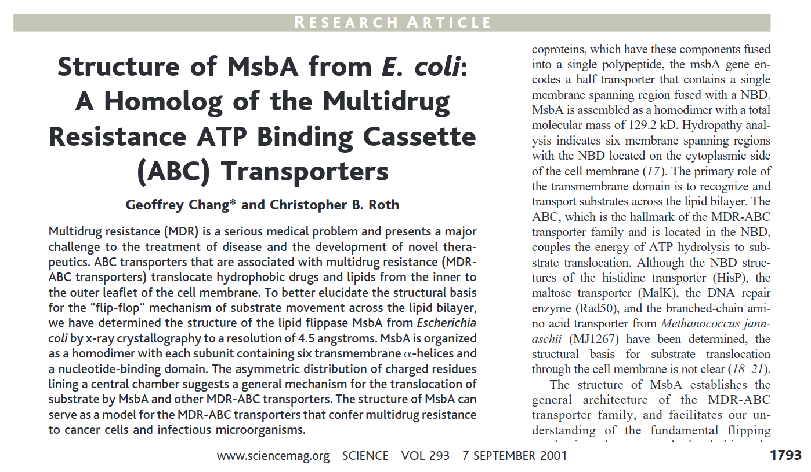
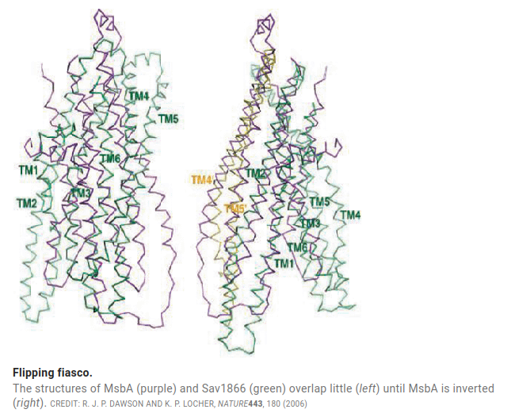

name: title layout: true class: center --- layout: false count: false .middle.center[ # CDM: Testing & CI/CD <br /> <br /> ### Oscar Esteban #### CHUV | Lausanne University Hospital ###### [oesteban.github.io/CDM/20230224](https://oesteban.github.io/CDM/20230224) ] --- layout: false count: false .middle.center[ # CDM: Testing & CI/CD <br /> <br /> ### Oscar Esteban #### CHUV | Lausanne University Hospital ###### [oesteban.github.io/CDM/20230224](https://oesteban.github.io/CDM/20230224) ] --- name: newsection layout: true .perma-sidebar[ <p class="rotate"> <a rel="license" href="http://creativecommons.org/licenses/by/4.0/"><img alt="Creative Commons License" style="border-width:0; height: 20px; padding-top: 6px;" src="https://i.creativecommons.org/l/by/4.0/88x31.png" /></a> <span style="padding-left: 10px; font-weight: 600;">PEP03 CDM: Testing & CI/CD</span> </p> ] --- # Intro to CDM (*Code & Data monthly*) .boxed-content[ .distribute.large[ * Loosely defined format (*unconference*) * Every four weeks, *blended* format * Volunteers needed * Comms channel - slack (https://dljcworkspace.slack.com/archives/C04N3KCRGDT) ] ] --- # Intro to CDM: proposed topics .boxed-content[ .distribute[ * Good software development practices - testing and CI/CD (8) * Git and data: what and why git -annex? How to become a cool kid using Datalad (5) * Publishing - from starting the writing to posting a preprint and submission (5) * Git: why git and basic command (4) * GitHub: what's different from Git, code review (4) * BIDS, BIDS-Derivatives and BIDS-related tooling (4) * CHUV's cluster - basic SLURM and cluster good-citizenship (3) * CHUV's cluster - GPUs (3) * CHUV's cluster - `singularity run docker://hello-world` (3) * Data-sharing, open data, open software - why and what to do? (3) * `docker run hello-world` - now what? (2) * What's Reproin? Acquiring at CHUV and safely converting to BIDS (2) * CHUV's storage - hOrus (1) * PACSMAN and accessing PACs (1) * Deidentification with RSNA CTP * Pipelining with airflow * DICOM auto-sorting and BIDS conversion (BIDSCOIN et al.) ] ] --- # Testing and CI/CD: Outline .boxed-content[ .distribute.large[ * A Scientist's Nightmare * Can scientific code even be tested? * Testing approaches * Automation, CI/CD ] ] --- # A Scientist's Nightmare <p align="center"> <br /> Full feature: <a href="https://doi.org/10.1126/science.314.5807.1856">10.1126/science.314.5807.1856</a> </p> --- # A Scientist's Nightmare <p align="center"> <br /> doi:<a href="https://doi.org/10.1038/nature05155">10.1038/nature05155</a> </p> --- # A Scientist's Nightmare (conclusion) .boxed-content[ .distribute.large[ * Prof. Chang retracted 5 papers in 2007 * Other researchers had to restart their projects * Wiederstein, M; Sippl, MJ (2007). *ProSA-web: interactive web service for the recognition of errors in three-dimensional structures of proteins*. Nucleic Acids Res. 35. doi:[10.1093/nar/gkm290](https://doi.org/10.1093/nar/gkm290) * Perkel, Jeffrey M. (2011). *Coding your way out of a problem*. Nat Meth 8 (7): 541–543. doi:[10.1038/nmeth.1631](https://doi.org/10.1038/nmeth.1631) ] ] --- # Can scientific code even be tested? <br /> *How can I test that my code is giving the right answer when I'm precisely trying to find that answer?* <p align="center"> <img src="https://y.yarn.co/74b563c2-b423-4eea-be0c-9cbcf9f05556_text.gif" width="50%" /> </p> <br /> <br /> * Howden, W.E. (1978). *Theoretical and Empirical Studies of Program Testing*. IEEE Transactions on Software Engineering. 4 (4): 293–298. doi:[10.1109/TSE.1978.231514](https://doi.org/10.1109/TSE.1978.231514) * Weyuker, Elaine J.; *The Oracle Assumption of Program Testing*, in Proceedings of the 13th International Conference on System Sciences (ICSS), Honolulu, HI, January 1980, pp. 44-49. --- # Testing approaches: what to test? <p align="center"> <img src="https://www.guru99.com/images/1/041318_0535_LevelsofTes1.png" width="50%" /> </p> --- # Unit tests `project/src/nifti.py`: ```Python import numpy as np def voxel_sizes(xform): """Calculates the voxel sizes given the s/q-form matrix of a NIfTI file.""" return np.linalg.norm(xform[:-1, :-1], axis=1) ``` ```Python Python 3.9.12 | packaged by conda-forge | (main, Mar 24 2022, 23:25:59) [GCC 10.3.0] on linux Type "help", "copyright", "credits" or "license" for more information. >>> import numpy as np >>> from nifti import voxel_sizes >>> voxel_sizes(np.diag([1.0, 2.0, 3.0, 1.0])) array([1., 2., 3.]) >>> voxel_sizes(np.diag([2.0, -1.0, 3.0, 1.0])) array([2., 1., 3.]) ``` --- # Unit tests - automating `project/test/test_nifti.py`: ```Python import numpy as np from nifti import voxel_sizes def test_voxels(): assert np.allclose(voxel_sizes(np.diag([1.0, 2.0, 3.0, 1.0])), [1., 2., 3.]) assert np.allclose(voxel_sizes(np.diag([2.0, -1.0, 3.0, 1.0])), [2., 1., 3.]) ``` From `project/src/`: ```Shell (base) oesteban@hos65851:~/workspace/test-example/src$ python -m pytest ../test/ ============================== test session starts ============================== platform linux -- Python 3.9.12, pytest-7.1.2, pluggy-1.0.0 rootdir: /data/home/oesteban/workspace/test-example plugins: forked-1.4.0, xdist-2.5.0, cov-3.0.0, env-0.6.2, anyio-3.6.2 collected 1 item ../test/test_nifti.py . [100%] =============================== 1 passed in 0.09s =============================== ``` --- # Unit tests - getting help from tools `project/test/test_nifti.py`: ```Python import numpy as np import pytest from nifti import voxel_sizes @pytest.mark.parametrize( "input_matrix,expected_sizes", [ (np.diag([1.0, 2.0, 3.0, 1.0]), [1., 2., 3.]), (np.diag([2.0, -1.0, 3.0, 1.0]), [2., 1., 3.]), ] ) def test_voxels(input_matrix, expected_sizes): assert np.allclose(voxel_sizes(input_matrix), expected_sizes) ``` --- # Unit tests - getting help from tools ```Shell $ python -m pytest ../test/ ============================== test session starts ============================== platform linux -- Python 3.9.12, pytest-7.1.2, pluggy-1.0.0 rootdir: /data/home/oesteban/workspace/test-example plugins: forked-1.4.0, xdist-2.5.0, cov-3.0.0, env-0.6.2, anyio-3.6.2 collected 2 items ../test/test_nifti.py .. [100%] =============================== 2 passed in 0.07s =============================== ``` --- # Exploring the domain of inputs ```Python import numpy as np import pytest from nifti import voxel_sizes @pytest.mark.parametrize( "input_matrix,expected_sizes", [ (np.diag([1.0, 2.0, 3.0, 1.0]), [1., 2., 3.]), (np.diag([2.0, -1.0, 3.0, 1.0]), [2., 1., 3.]), (np.array([ [0.0, -1.0, 0.0, 0.0], [2.0, 0.0, 0.0, 0.0], [0.0, 0.0, 3.0, 0.0], [0.0, 0.0, 0.0, 1.0] ]), [2.0, 1.0, 3.0]), ] ) def test_voxels(input_matrix, expected_sizes): assert np.allclose(voxel_sizes(input_matrix), expected_sizes) ``` Let's test away! --- # Bug! .tiny[ ```Shell $ python -m pytest ../test/ ============================== test session starts ============================== platform linux -- Python 3.9.12, pytest-7.1.2, pluggy-1.0.0 rootdir: /data/home/oesteban/workspace/test-example plugins: forked-1.4.0, xdist-2.5.0, cov-3.0.0, env-0.6.2, anyio-3.6.2 collected 3 items ../test/test_nifti.py ..F [100%] =================================== FAILURES ==================================== __________________ test_voxels[input_matrix2-expected_sizes2] ___________________ input_matrix = array([[ 0., -1., 0., 0.], [ 2., 0., 0., 0.], [ 0., 0., 3., 0.], [ 0., 0., 0., 1.]]) expected_sizes = [2.0, 1.0, 3.0] @pytest.mark.parametrize( "input_matrix,expected_sizes", [ (np.diag([1.0, 2.0, 3.0, 1.0]), [1., 2., 3.]), (np.diag([2.0, -1.0, 3.0, 1.0]), [2., 1., 3.]), (np.array([ [0.0, -1.0, 0.0, 0.0], [2.0, 0.0, 0.0, 0.0], [0.0, 0.0, 3.0, 0.0], [0.0, 0.0, 0.0, 1.0] ]), [2.0, 1.0, 3.0]), ] ) def test_voxels(input_matrix, expected_sizes): > assert np.allclose(voxel_sizes(input_matrix), expected_sizes) E assert False E + where False = <function allclose at 0x7f8f30cbb160>(array([1., 2., 3.]), [2.0, 1.0, 3.0]) E + where <function allclose at 0x7f8f30cbb160> = np.allclose E + and array([1., 2., 3.]) = voxel_sizes(array([[ 0., -1., 0., 0.],\n [ 2., 0., 0., 0.],\n [ 0., 0., 3., 0.],\n [ 0., 0., 0., 1.]])) ../test/test_nifti.py:19: AssertionError ============================ short test summary info ============================ FAILED ../test/test_nifti.py::test_voxels[input_matrix2-expected_sizes2] - ass... ========================== 1 failed, 2 passed in 0.14s ========================== ``` ] --- # Bugfix `project/src/nifti.py`: ```Python import numpy as np def voxel_sizes(xform): """Calculates the voxel sizes given the s/q-form matrix of a NIfTI file.""" return np.linalg.norm(xform[:-1, :-1], axis=0) ``` ```Shell $ python -m pytest ../test/ ============================== test session starts ============================== platform linux -- Python 3.9.12, pytest-7.1.2, pluggy-1.0.0 rootdir: /data/home/oesteban/workspace/test-example plugins: forked-1.4.0, xdist-2.5.0, cov-3.0.0, env-0.6.2, anyio-3.6.2 collected 3 items ../test/test_nifti.py ... [100%] =============================== 3 passed in 0.07s =============================== ``` --- # Fuzzing ```Python import numpy as np import nibabel as nb import pytest from nifti import voxel_sizes @pytest.mark.parametrize( "expected_sizes", [[1., 2., 3.], [2., 1., 3.]], ) @pytest.mark.parametrize("testnumber", list(range(10))) @pytest.mark.parametrize("flip_y", [True, False]) def test_fuzzing(expected_sizes, testnumber, flip_y): rotmat = nb.eulerangles.euler2mat( z=np.random.uniform(-np.pi/4, np.pi/4), y=np.random.uniform(-np.pi/4, np.pi/4) + np.pi * flip_y, x=np.random.uniform(-np.pi/4, np.pi/4), ) input_matrix = np.eye(4) input_matrix[:-1, :-1] = rotmat * expected_sizes assert np.allclose(voxel_sizes(input_matrix), expected_sizes) ``` --- # Fuzzing (running tests) ```Shell $ python -m pytest ../test/ ============================== test session starts ============================== platform linux -- Python 3.9.12, pytest-7.1.2, pluggy-1.0.0 rootdir: /data/home/oesteban/workspace/test-example plugins: forked-1.4.0, xdist-2.5.0, cov-3.0.0, env-0.6.2, anyio-3.6.2 collected 43 items ../test/test_nifti.py ........................................... [100%] ======================== 43 passed, 4 warnings in 0.43s ========================= ``` --- # Integration tests <blockquote class="twitter-tweet"><p lang="en" dir="ltr">2 unit tests. 0 integration tests <a href="https://t.co/V2Z9F4G1sJ">pic.twitter.com/V2Z9F4G1sJ</a></p>— DEV Community 👩💻👨💻 (@ThePracticalDev) <a href="https://twitter.com/ThePracticalDev/status/687672086152753152?ref_src=twsrc%5Etfw">January 14, 2016</a></blockquote> --- # System/acceptance: smoke testing <p align="center"> <img src="https://thumbs.gfycat.com/FairAcclaimedEyas-size_restricted.gif" width="50%" /> </p> --- # Wrapping up .boxed-content[ .distribute.large[ * Implement tests - will save you time in the long term (TDD) * What is continuous integration and delivery? * Code style and linting * Code coverage ] ] --- # What about Matlab? https://ch.mathworks.com/help/matlab/matlab_prog/ways-to-write-unit-tests.html <blockquote class="twitter-tweet"><p lang="en" dir="ltr">I created a <a href="https://twitter.com/MATLAB?ref_src=twsrc%5Etfw">@MATLAB</a> function to help me write better code.<br><br>A thread.<a href="https://t.co/t4XATWDFjB">https://t.co/t4XATWDFjB</a><br><br>1/16</p>— Remi Gau @RemiGau@kolektiva.social (@RemiGau) <a href="https://twitter.com/RemiGau/status/1266388006329552898?ref_src=twsrc%5Etfw">May 29, 2020</a></blockquote> --- .boxed-content[ .middle.center[ # Thanks! ### Questions? ] ]